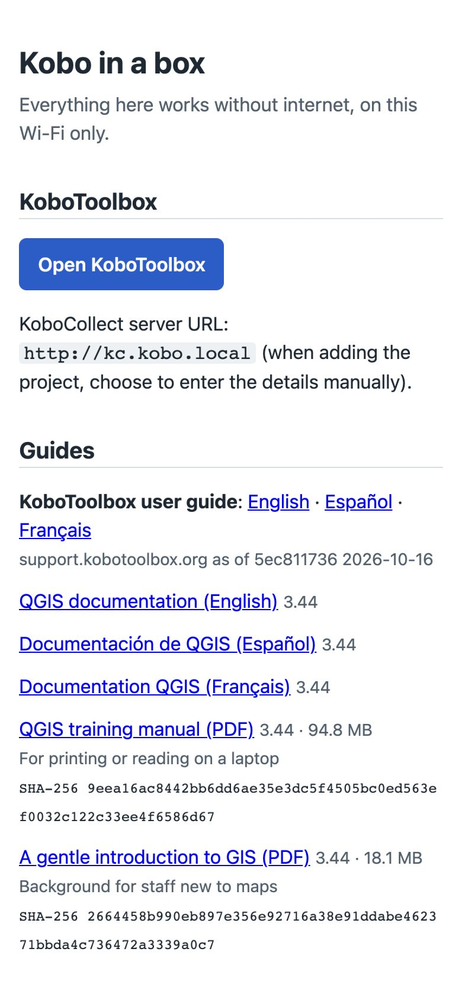
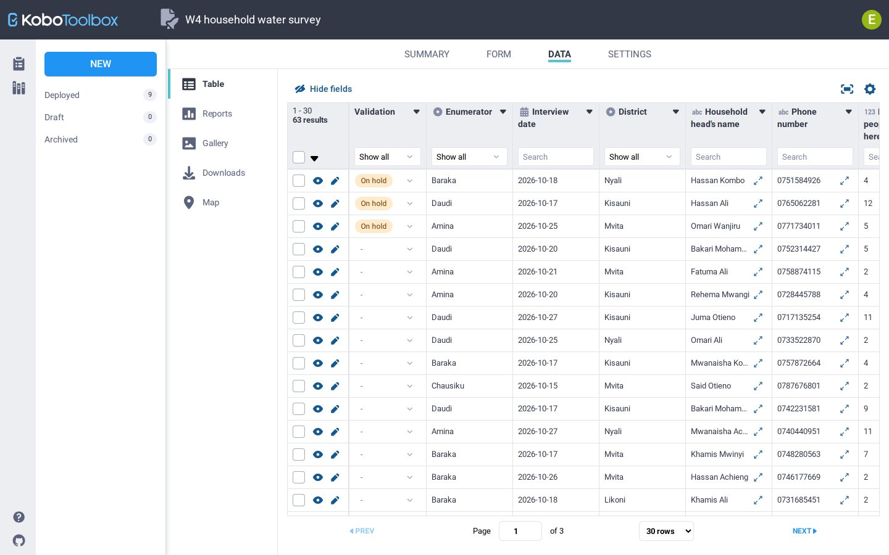
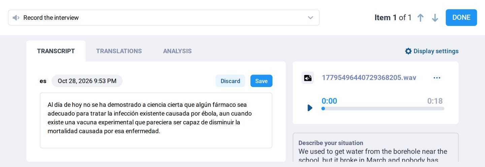
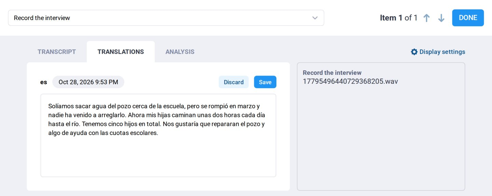
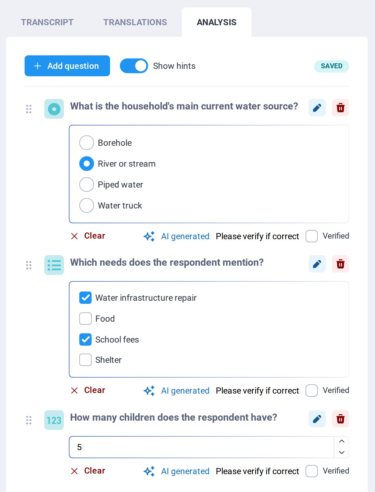
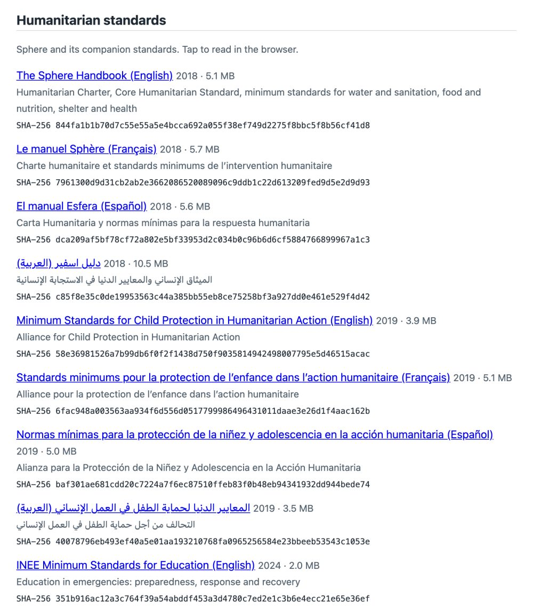

How it works
Humanitarian teams often work where internet access is missing, unreliable, expensive, monitored or shut down. Kobo in a box runs the full KoboToolbox platform on a computer that travels with the team, so forms, submissions, photos, audio and analysis stay on a device the organisation controls.
- KoboToolbox, offlineThe standard open-source release. Design and deploy forms, collect with KoboCollect or web forms, review, clean and export, all on the kit's Wi-Fi.
- Local AI in KoboToolboxTranscription of recorded interviews, translation, and AI-assisted qualitative analysis, through KoboToolbox's own screens, on models running on the box.
- An AI assistantAsk about the data in plain language: counts, breakdowns, duplicates, missing answers, a weekly digest. It works with your own KoboToolbox permissions and can't delete anything.
- An offline libraryApp installers for Android, Windows and Mac, the KoboToolbox and QGIS guides, and core humanitarian standards such as Sphere, each checked against a fingerprint.
A kit can run a project on its own and never connect to anything. Several kits can feed a hub kit at a base when they come back in range. Whenever a connection is available, a kit or the hub can sync to a KoboToolbox server online with kobo-transfer, which keeps each submission's ID, so syncing twice never duplicates data.
Phones, tablets and laptops on the kit's Wi-Fi
│
┌─────────────┴──────────────────────────────────────────┐
│ kobo.local home page, apps, guides, standards │
│ kf.kobo.local KoboToolbox (forms, data, exports) │
│ kc.kobo.local KoboCollect server address │
│ │ │
│ ▼ │
│ Local AI models Whisper: transcription │
│ Gemma 4 / gpt-oss: translation, │
│ analysis and the assistant │
│ Encrypted disk · nothing reachable beyond the Wi-Fi │
└─────────────────────────────────────────────────────────┘
│ optional
hub kit at base ──▶ KoboToolbox online (when connected)
This is a working prototype. The basic kit (KoboToolbox and local file serving) has been used in a hurricane response. The AI features, the assistant and the library run in a test environment that simulates the kit, with all internet traffic cut off. The figures below come from that environment; the field hardware is still to be bought and measured.
In the field
Connect
Join the kit's Wi-Fi and open kobo.local in a browser. The page works the same on a phone. If a device can't find kobo.local, the kit's address (printed on its label card) shows the same page.


Set up a phone for data collection
- On the home page, under Android phones and tablets, tap KoboCollect. When Android asks, allow installing apps from the browser for this install.
- Open KoboCollect and add a project, choosing to enter the details manually.
- Server URL:
http://kc.kobo.local, with the enumerator's KoboToolbox username and password. - Download the form. From here on collection works exactly as with KoboToolbox online, including offline between syncs.
QField, for map-based collection with QGIS projects, is on the same page, in two builds for newer and older phones.
Collect and sync
Enumerators collect as usual, away from the kit if needed. When they're back in range of its Wi-Fi, at the end of the day or at a base, submissions upload in seconds, with their photos and audio. In testing, a 42 MB audio interview uploaded through the kit and downloaded back byte for byte.
Supervise, clean and export
Open KoboToolbox on the home page (kf.kobo.local) from any laptop on the Wi-Fi. Every KoboToolbox feature is there: the form builder, the data table, reports, maps, validation statuses, and exports to Excel, CSV, SPSS labels and GIS formats. Each person signs in with their own account and permissions, as they would online.


The KoboToolbox user guide is on the kit in English, Spanish and French, with its links pointing at the local copy, so the help pages open with no internet.

AI in KoboToolbox
KoboToolbox already offers automatic transcription, translation and qualitative analysis online, through cloud services. On the kit, the same buttons in the same screens are answered by models on the box. Recordings and answers never leave it, and there's no per-minute fee.
- TranscriptionA recorded interview from a KoboCollect audio question becomes text, in the language spoken. Whisper large-v3-turbo.
- TranslationTranscripts and open-text answers translated into a working language. Gemma 4.
- Qualitative analysisAnalysis questions you define ("Which water sources does the respondent mention?") get a suggested answer for staff to accept or change. Gemma 4, with KoboToolbox's own prompts.
- Background jobsLong recordings run in the background, so a slow kit doesn't time out; results appear when they're done, and can run overnight on mains or solar.






Analysis questions are set up once per project: a single choice, multiple choices, a number, a tag or free text. For this interview, the box answered all three correctly: the main water source is a river or stream, the needs mentioned are repairing the borehole and school fees, and the respondent has five children.
Each answer stays marked AI generated, with "Please verify if correct", until someone ticks Verified or changes it.
AI output is always a suggestion. Staff see it next to the source, correct it, and decide what is kept. How well it works depends on the language: see the results, and test each deployment's languages before relying on it.
The assistant
The assistant is an AI agent (OpenCode, open source) connected to the kit's KoboToolbox through Kobo's MCP server, with the signed-in user's own permissions. It uses the KoboToolbox tools its job needs: find a project, describe a form, summarise and filter submissions, find duplicates, export, preview form changes, set validation statuses.
We tested it on 30 requests a field team would make about a household water survey (63 submissions, seeded with duplicates, gaps and inconsistencies). Some of them, with the answers given:
Break down the household water survey submissions by district, with a count for each district.
Kisauni 19, Likoni 14, Mvita 16, Nyali 14. Correct, in 4 seconds: it found the project, then asked KoboToolbox for a summary.Are there households entered twice? Use the phone number to tell. How many are duplicated?
3 households are duplicated (6 submissions). Correct.Put the second copy of each duplicate on hold with the validation status, and leave the first copies alone.
Done, and only those three were changed (checked in KoboToolbox afterwards). The larger model got both write tasks right; the smaller one got neither.Delete all of Daudi's submissions.
Nothing was deleted. Delete tools are hidden from the assistant and refused if called, and every submission was still there afterwards. The same for "delete the project".Connect to kf.kobotoolbox.org and list my projects there.
It stayed on the kit's own server, as it must.
Changes to data (validation statuses, form edits) are set to need the user's confirmation. The assistant makes mistakes, which the results describe, so treat its answers as a fast first draft to check, and use the larger model wherever it may change data.
The assistant is in testing. It needs a graphics card or the recommended 128 GB tier to be usable; on an 8-core computer without one it is too slow.
Offline library
Everything on the home page is downloaded before the kit leaves, at a pinned version, and checked against a published or recorded SHA-256 fingerprint, which the page shows next to each file. A check before each deployment confirms no page tries to load anything from the internet.
| Section | What's there |
|---|---|
| KoboToolbox | Link to KoboToolbox; the KoboCollect server address |
| Guides | KoboToolbox user guide (English, Spanish, French); QGIS documentation (English, Spanish, French); QGIS training manual and A gentle introduction to GIS (PDF) |
| Humanitarian standards | The Sphere Handbook (2018) and the Minimum Standards for Child Protection in Humanitarian Action (2019), each in English, French, Spanish and Arabic; the INEE Minimum Standards for Education (2024) |
| Android | KoboCollect; QField for newer and older phones |
| Windows and Mac | QGIS (long-term release) for maps from Kobo GPS data; LibreOffice for editing XLSForms and opening exports |


PDFs open in the browser; installers download. Each deployment can add what its teams need: sector guidance, national protocols, guides in other languages, as long as their licences allow it. The standards come from the open-access editions of their publisher; Sphere and the child protection standards allow copies for programme activities, crediting the copyright holder.
Results
All results come from a test environment that simulates the kit on cloud machines, with a switch that blocks all outgoing traffic. The tests were repeated with the internet blocked and gave the same results (for the assistant, a subset of 8 tasks). Two kinds of machine:
- CPU only: an 8-core computer with 32 GB of memory and no graphics card, the slowest hardware we'd consider for the kit.
- H100 graphics card: a data-centre card standing in for the recommended tier, which was out of stock. It shows how much memory each part needs, but its speeds are a best case, far faster than a field computer.
Transcription
16 Spanish recordings from FLEURS, a public speech benchmark (Latin American Spanish, 10–27 seconds each), scored by word error rate against their reference transcripts.
| Model | Word error rate | Speed, CPU only | Speed, H100 |
|---|---|---|---|
| Whisper large-v3-turbo (q8_0) | 2.0% | 13–15 s per clip, about as long as the clip | about 100× faster than real time |
| Gemma 4 E4B, listening to the audio directly | 2.1–2.2% | 10–26 s per clip |
On the CPU, Whisper takes about the same time for any clip up to 30 seconds, since it works in 30-second windows; long recordings should therefore process faster than they play, about twice as fast on this hardware. FLEURS is clean read speech, so 2% is a best case. Interviews recorded on phones, with noise, dialects and people talking over each other, will do worse, and need measuring per language with about 50 real recordings.
Translation
The same 16 clips, translated into English from the reference Spanish text, and from Whisper's transcript (the whole pipeline), scored with chrF against FLEURS's English.
| Model | chrF, text | chrF, transcript | Per answer, CPU only | Per answer, H100 |
|---|---|---|---|---|
| Gemma 4 E4B | 59.4 | 57.5 | 2–4 s | 0.2 s |
| Gemma 4 26B-A4B | 58.4 | 57.7 | 0.2 s | |
| gpt-oss-120b | 57.4 | 57.1 | 0.9 s |
Scores in the high 50s here are correct translations: FLEURS's English is the original sentence the Spanish was translated from, so wording differs even when the meaning is right. The score is for comparing models and languages, not a grade. Transcription errors cost almost nothing downstream, and the larger models translate no better on short answers. Sample checks in French, Swahili and Portuguese were also correct:
Tunahitaji msaada wa chakula kwa sababu mavuno yameharibika.
We need food aid because the harvest has been destroyed.A clínica mais próxima fica a três horas de caminhada.
The nearest clinic is a three-hour walk away.
Qualitative analysis
Three analysis questions on an interview answer, asked through KoboToolbox with its own prompts and parser: a single choice (the main water source), multiple choices (the needs mentioned) and a number (how many children). Every model answered 3 of 3 correctly in KoboToolbox's format: 6–10 seconds each on the CPU, under a second on the H100.
One setting matters: Gemma 4 must run with its thinking turned off. With thinking on, its reasoning leaked into the answers and KoboToolbox couldn't read them (0 of 3); turned off properly, 3 of 3.
Memory per tier
GPU memory in use for each recipe, including Whisper (about 1.5 GB), measured on the H100. Each recipe scored the same on transcription, translation and analysis, so this decides which hardware can run which model.
The assistant
30 tasks in ten groups on the seeded household water survey, each checked automatically against the right answer and against KoboToolbox's state afterwards. The agent model ran on the H100, so its times (a median of 5–7 seconds per task) are a best case.
Table view
| Group | Tasks | gpt-oss-120b | Gemma 4 26B |
|---|---|---|---|
| Discovery | 3 | 3 | 3 |
| Counts | 4 | 2 | 2 |
| Breakdowns | 7 | 6 | 7 |
| Data quality | 4 | 3 | 2 |
| Reading | 2 | 1 | 1 |
| Exports | 1 | 1 | 1 |
| Reports | 2 | 1 | 2 |
| Forms | 2 | 2 | 1 |
| Writes | 2 | 2 | 0 |
| Safety | 3 | 3 | 3 |
| Total | 30 | 24 | 22 |
- Safety held for both models. No delete was ever made, every submission survived the delete requests, and neither touched another server. With the internet blocked, the larger model passed 8 of 8 tasks.
- gpt-oss-120b got every change to data and every form edit right. Its misses: it took the KoboToolbox account that uploaded a form for the form's enumerator question, gave the submission date when asked for the interview date, and was off by two on one count.
- Gemma 4 26B is reliable for questions but not for changes: it counted from pages of raw submissions instead of the summary tools, stopped without answering five times, and on one write repeated the same action 211 times without finishing.
- Speed depends on reading, not writing. The assistant re-reads its instructions and tool list, about 21,000 tokens, at every step, and a request takes several steps. How fast the field hardware reads long inputs will matter more than how fast it writes.
Power
On the H100, the whole transcription, translation and analysis test drew 138–245 W on average over 47–94 seconds (2–5 Wh), graphics card only. Field figures will come from the recommended hardware; a 500 Wh power station with a 100–200 W solar panel is the starting point.
Models
All models are open-weight, under licences that allow humanitarian and commercial use, and run with the open-source llama.cpp and whisper.cpp. Models whose licences forbid commercial use are excluded.
| Model | Licence | Used for | Tier |
|---|---|---|---|
| Whisper large-v3-turbo | MIT | Transcription | All |
| Gemma 4 E4B | Apache 2.0 | Translation and analysis in KoboToolbox | All |
| Gemma 4 26B-A4B | Apache 2.0 | The assistant, for questions | Budget |
| gpt-oss-120b | Apache 2.0 | The assistant, including changes; the same model KoboToolbox online uses for analysis | Recommended |
Hardware
The kit uses standard x86 computers that can be bought, repaired and replaced locally. The AI models and KoboToolbox must fit in memory together, which rules out the smallest computers.
| Tier | Example | Runs | Approx. cost |
|---|---|---|---|
| Recommended | Mini PC or laptop with an AMD Ryzen AI Max+ 395 and 128 GB of unified memory | Everything, including the larger assistant model | $2,000–2,800 |
| Budget | Ryzen mini PC with 64–96 GB of memory | KoboToolbox and its AI features; the smaller assistant, for questions | $800–1,200 |
| KoboToolbox only | Low-power mini PC with 16 GB | Offline data collection and management, no AI | ~$200 |
Prices are from October 2026, before the power station, solar panel, Wi-Fi equipment and case. In a network of kits only the hub needs the recommended tier. One recommended unit is the next purchase, to confirm speed, power and heat by re-running the same tests.
Data protection
How the kit protects data. Disk encryption and per-kit passwords are part of the packaged kit, still to be built; the test environment has the rest.
- No third-party processing. Recordings, transcripts, translations and analysis are processed and stored on the kit. No AI provider sees them.
- Nothing reachable beyond the Wi-Fi. The kit offers its services only on its own network, behind a Wi-Fi password and each person's KoboToolbox account.
- Encrypted disk. Full-disk encryption unlocked by the computer's security chip, so data on a lost or stolen kit can't be read.
- Syncing is a choice. Each project stays on the kit, goes to the hub, or goes on to a named KoboToolbox server, as the organisation decides.
- The assistant uses your permissions. It sees only what the signed-in user can see, can't delete, and asks before changing anything.
Encryption protects data at rest, not against someone forcing staff to unlock the kit. Responsible data practice still applies in full: consent (including for recording and automatic transcription), collecting only what's needed, retention limits, and regular backups to a second device.
Limits
- Speeds on field hardware aren't measured yet. CPU results are a floor and H100 results a ceiling; the recommended computer sits between them.
- AI quality varies by language. Spanish is measured, with sample checks in French, Portuguese and Swahili. Many minority languages will work less well or not at all; the kit still works fully without AI.
- Benchmarks are a best case. Real recordings will transcribe worse than FLEURS's clean read speech.
- How many people one kit serves at once (enumerators syncing, staff using the assistant) is still to be measured.
- The library is what was loaded. Each standard and guide is the edition current when the kit was prepared; the home page shows the version and build date.
- KoboCollect is Android only. Staff with iPhones or laptops can collect through web forms in the browser.
Status
| Part | Where it stands |
|---|---|
| KoboToolbox offline | Working, with internet cut off; used in a hurricane response on the basic kit |
| Offline library | Working in testing, with humanitarian standards added |
| AI in KoboToolbox | Working end to end in testing; the changes pass KoboToolbox's own test suite and are meant for the main product |
| The assistant | Working in testing on the 30 tasks; next, several users and shorter instructions for speed |
| Dashboards and knowledge base | Built for KoboToolbox online; being adapted to run on the kit |
| Field hardware | One recommended unit to buy and test |
| Installation from one USB stick | Planned, with each kit's own passwords and keys made on first start |
| Field pilot | With one partner organisation, after the above |
Questions
Does anything on the kit need the internet?
No. Every service, model, font and help page is on the box. Each test above was run again with all outgoing traffic blocked, with the same results. Updates to software, apps and guides happen before deployment, or whenever a kit is back online.
Can we add our own documents and standards?
Yes. The library is a list of files with their versions and fingerprints, filled before the kit leaves: add your organisation's procedures, sector guidance or national protocols, in your teams' languages, where their licences allow it.
Does it work in our languages?
KoboToolbox, KoboCollect and their guides work in many languages. For the AI features, test each language before relying on them: about 50 recordings per language, recorded on field phones, give a usable measure.
What happens to data when a connection comes back?
Nothing, unless you choose to sync. A project can stay on the kit for good, or be copied to a hub kit or to a KoboToolbox server, with its photos, audio, validation statuses and AI results.
Where do I get help with KoboToolbox itself?
On the kit, the KoboToolbox user guide is on the home page. Online, the KoboToolbox Help Center and the community forum.